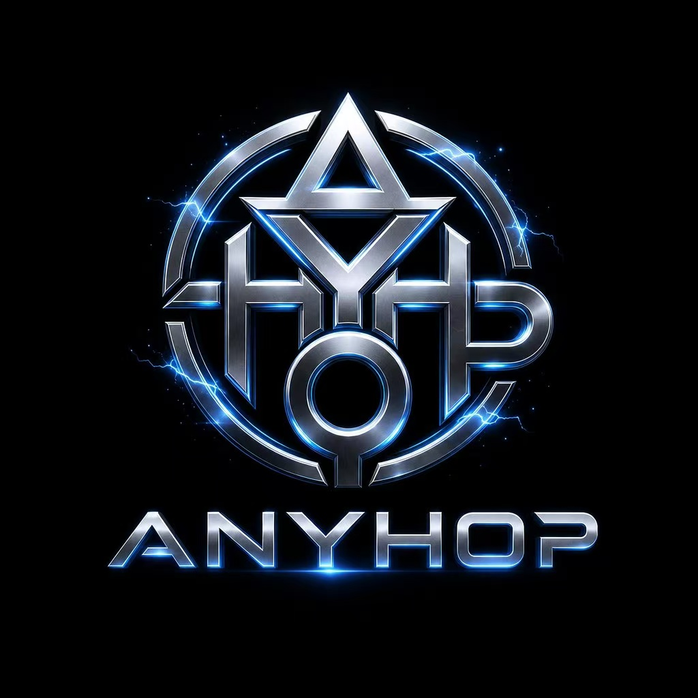

AnyHop AI几分钟内完成接入，开始使用 AnyHop AI 的大模型 API 服务Get started with AnyHop AI's LLM API service in minutes
点击右上角「控制台」按钮，使用邮箱注册 AnyHop AI 账号。注册完成后登录控制台，在「API Keys」页面点击「创建 API Key」。Click the "Console" button in the top right corner, register with your email. After login, go to "API Keys" page and click "Create API Key".
你的 API Key 格式如下：Your API Key format:
sk-anyhop-xxxxxxxxxxxxxxxxxxxxAnyHop AI 同时兼容 Anthropic 和 OpenAI SDK，根据你的需求选择安装：AnyHop AI is compatible with both Anthropic and OpenAI SDKs. Install based on your needs:
# Anthropic SDK (recommended)
pip install anthropic
# Or OpenAI SDK
pip install openai# Anthropic SDK
npm install @anthropic-ai/sdk
# Or OpenAI SDK
npm install openaigo get github.com/anthropics/anthropic-sdk-go初始化客户端时只需替换 base_url 和 api_key，其他代码与官方 SDK 完全一致。Just replace base_url and api_key when initializing the client. Everything else is identical to the official SDK.
import anthropic
client = anthropic.Anthropic(
api_key="sk-anyhop-xxxx",
base_url="https://anyhop.ai"
)
message = client.messages.create(
model="claude-sonnet-4-6",
max_tokens=1024,
messages=[
{"role": "user", "content": "Hello, introduce yourself in one sentence"}
]
)
print(message.content[0].text)from openai import OpenAI
client = OpenAI(
api_key="sk-anyhop-xxxx",
base_url="https://anyhop.ai/openai/v1"
)
response = client.chat.completions.create(
model="gpt-5.4",
messages=[
{"role": "system", "content": "You are a helpful assistant"},
{"role": "user", "content": "Hello, introduce yourself in one sentence"}
]
)
print(response.choices[0].message.content)curl https://anyhop.ai/v1/messages \
-H "Content-Type: application/json" \
-H "x-api-key: sk-anyhop-xxxx" \
-H "anthropic-version: 2023-06-01" \
-d '{
"model": "claude-sonnet-4-6",
"max_tokens": 1024,
"messages": [
{"role": "user", "content": "Hello!"}
]
}'import Anthropic from "@anthropic-ai/sdk";
const client = new Anthropic({
apiKey: "sk-anyhop-xxxx",
baseURL: "https://anyhop.ai",
});
const message = await client.messages.create({
model: "claude-sonnet-4-6",
max_tokens: 1024,
messages: [
{ role: "user", content: "Hello, introduce yourself" },
],
});
console.log(message.content[0].text);对于需要实时展示回复的场景（如聊天界面），使用流式输出可以逐字显示模型回复，大幅提升用户体验。For real-time response display (e.g., chat interfaces), streaming output shows model replies word by word, greatly improving user experience.
import anthropic
client = anthropic.Anthropic(
api_key="sk-anyhop-xxxx",
base_url="https://anyhop.ai"
)
with client.messages.stream(
model="claude-sonnet-4-6",
max_tokens=1024,
messages=[{"role": "user", "content": "Write a quicksort in Python"}]
) as stream:
for text in stream.text_stream:
print(text, end="", flush=True)
print()import Anthropic from "@anthropic-ai/sdk";
const client = new Anthropic({
apiKey: "sk-anyhop-xxxx",
baseURL: "https://anyhop.ai",
});
const stream = client.messages.stream({
model: "claude-sonnet-4-6",
max_tokens: 1024,
messages: [
{ role: "user", content: "Write a quicksort in JavaScript" },
],
});
for await (const event of stream) {
if (event.type === "content_block_delta"
&& event.delta.type === "text_delta") {
process.stdout.write(event.delta.text);
}
}Claude Code 是 Anthropic 官方的 AI 编程工具，支持 CLI、桌面端（Mac/Windows）、Web 端和 IDE 插件（VS Code / JetBrains）。Claude Code is Anthropic's official AI coding tool, available as CLI, desktop app (Mac/Windows), web app, and IDE extensions (VS Code / JetBrains).
# 添加到 ~/.bashrc 或 ~/.zshrc 永久生效
export ANTHROPIC_API_KEY="sk-anyhop-xxxx"
export ANTHROPIC_BASE_URL="https://anyhop.ai"
# 然后启动 Claude Code
claude# 临时设置（当前会话）
$env:ANTHROPIC_API_KEY="sk-anyhop-xxxx"
$env:ANTHROPIC_BASE_URL="https://anyhop.ai"
claude
# 永久设置（写入用户环境变量）
[System.Environment]::SetEnvironmentVariable("ANTHROPIC_API_KEY", "sk-anyhop-xxxx", "User")
[System.Environment]::SetEnvironmentVariable("ANTHROPIC_BASE_URL", "https://anyhop.ai", "User"):: 临时设置
set ANTHROPIC_API_KEY=sk-anyhop-xxxx
set ANTHROPIC_BASE_URL=https://anyhop.ai
claude
:: 永久设置
setx ANTHROPIC_API_KEY "sk-anyhop-xxxx"
setx ANTHROPIC_BASE_URL "https://anyhop.ai"在 VS Code 中安装 Claude Code 插件后，打开设置（Ctrl+,），搜索 claude，配置：After installing the Claude Code extension in VS Code, open Settings (Ctrl+,), search claude, and configure:
// settings.json
{
"claude-code.apiKey": "sk-anyhop-xxxx",
"claude-code.apiBaseUrl": "https://anyhop.ai"
}在 JetBrains IDE（IntelliJ / PyCharm / WebStorm 等）中：Settings → Tools → Claude Code，填入 API Key 和 Base URL。In JetBrains IDEs (IntelliJ / PyCharm / WebStorm): Settings → Tools → Claude Code, enter API Key and Base URL.
AnyHop AI 兼容所有支持自定义 API 端点的第三方工具。以下是各主流工具的详细配置方法：AnyHop AI is compatible with all third-party tools that support custom API endpoints. Here are detailed setup guides for popular tools:
Cursor 是基于 VS Code 的 AI 编辑器。配置路径：Settings → Models → OpenAI API KeyCursor is an AI-powered code editor based on VS Code. Go to: Settings → Models → OpenAI API Key
# Cursor 设置
API Key: sk-anyhop-xxxx
Base URL: https://anyhop.ai/openai/v1
# 或在 ~/.cursor/config.json 中配置
{
"openai.apiKey": "sk-anyhop-xxxx",
"openai.baseUrl": "https://anyhop.ai/openai/v1"
}Windsurf（原 Codeium 编辑器）配置路径：Settings → AI ProviderWindsurf (formerly Codeium editor): Settings → AI Provider
# Windsurf 设置
Provider: OpenAI Compatible
API Key: sk-anyhop-xxxx
Base URL: https://anyhop.ai/openai/v1
Model: gpt-4o / claude-sonnet-4-6Cline 是 VS Code 上最流行的 AI 编程插件之一。安装后在侧边栏打开 Cline 面板，点击设置图标：Cline is one of the most popular AI coding extensions for VS Code. After installing, open the Cline panel and click the settings icon:
# Cline 设置
API Provider: Anthropic
API Key: sk-anyhop-xxxx
Base URL: https://anyhop.ai
Model: claude-sonnet-4-6
# 或选择 OpenAI Compatible
API Provider: OpenAI Compatible
API Key: sk-anyhop-xxxx
Base URL: https://anyhop.ai/openai/v1
Model: gpt-4oContinue 支持 VS Code 和 JetBrains。编辑配置文件 ~/.continue/config.json：Continue supports VS Code and JetBrains. Edit ~/.continue/config.json:
{
"models": [
{
"title": "Claude via AnyHop",
"provider": "anthropic",
"model": "claude-sonnet-4-6",
"apiKey": "sk-anyhop-xxxx",
"apiBase": "https://anyhop.ai"
},
{
"title": "GPT via AnyHop",
"provider": "openai",
"model": "gpt-4o",
"apiKey": "sk-anyhop-xxxx",
"apiBase": "https://anyhop.ai/openai/v1"
}
]
}Aider 是命令行 AI 编程助手，通过环境变量配置：Aider is a CLI AI coding assistant. Configure via environment variables:
# 使用 Anthropic 格式
export ANTHROPIC_API_KEY="sk-anyhop-xxxx"
export ANTHROPIC_BASE_URL="https://anyhop.ai"
aider --model claude-sonnet-4-6
# 或使用 OpenAI 格式
export OPENAI_API_KEY="sk-anyhop-xxxx"
export OPENAI_API_BASE="https://anyhop.ai/openai/v1"
aider --model gpt-4o这些桌面/Web 聊天客户端配置方式类似：These desktop/web chat clients share a similar setup:
# 通用配置
API Provider: OpenAI API Compatible
API Host: https://anyhop.ai/openai/v1
API Key: sk-anyhop-xxxx
Model: gpt-4o / claude-sonnet-4-6在代码框架中使用：Use in code frameworks:
# LangChain
from langchain_anthropic import ChatAnthropic
llm = ChatAnthropic(
model="claude-sonnet-4-6",
api_key="sk-anyhop-xxxx",
base_url="https://anyhop.ai"
)
# LangChain (OpenAI)
from langchain_openai import ChatOpenAI
llm = ChatOpenAI(
model="gpt-4o",
api_key="sk-anyhop-xxxx",
base_url="https://anyhop.ai/openai/v1"
)在这些低代码 AI 平台中，进入「模型供应商」设置，添加自定义模型：In these low-code AI platforms, go to "Model Provider" settings and add a custom model:
# Dify 配置路径：设置 → 模型供应商 → 添加自定义模型
Provider Type: OpenAI-API-compatible
Model Name: gpt-4o
API Key: sk-anyhop-xxxx
API Endpoint: https://anyhop.ai/openai/v1在控制台「充值」页面选择套餐进行充值。在「个人中心」可查看实时余额、详细用量统计和调用日志。Top up on the "Recharge" page in the console. Check real-time balance, detailed usage stats, and API call logs in "Account Center".
所有模型按实际 Token 用量计费，价格详见 模型广场。API 文档详见 完整文档。All models are billed by actual token usage. See Models for pricing. See API Docs for details.